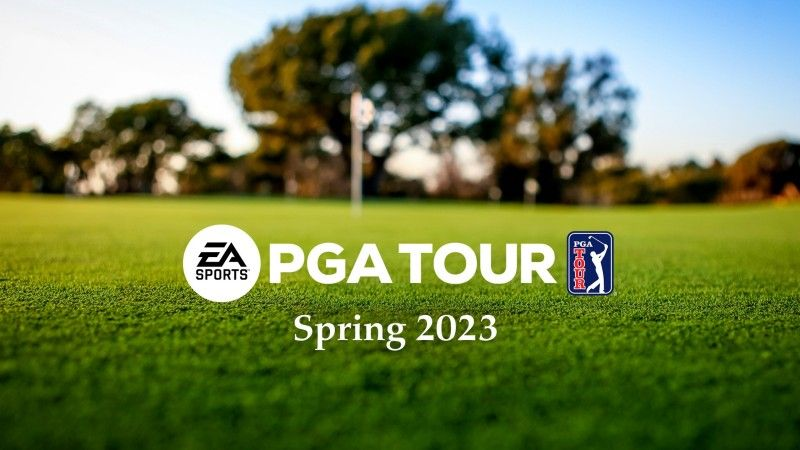
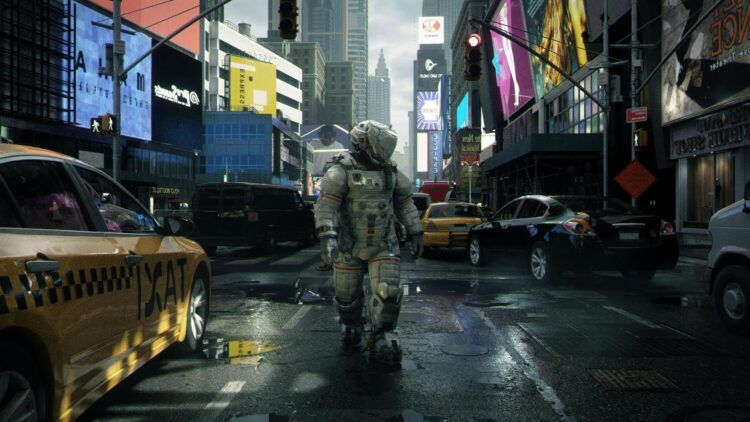
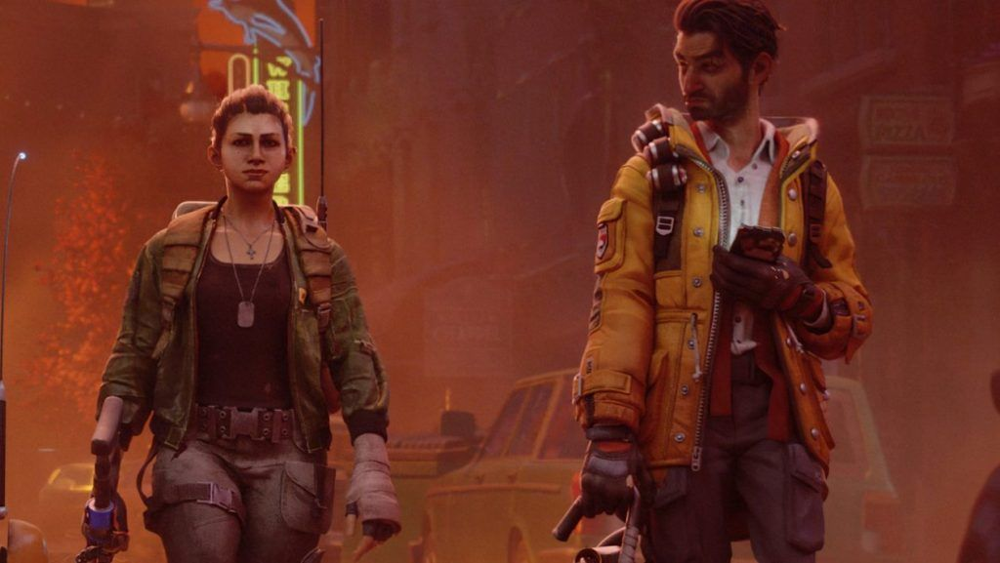
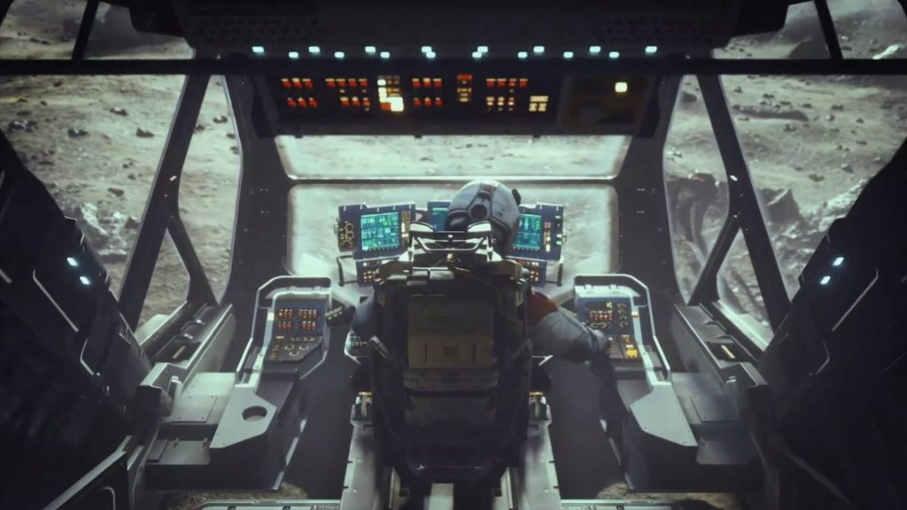
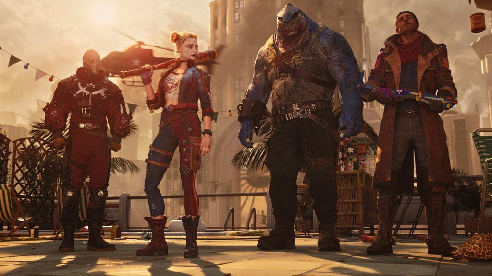

Los videojuegos más esperados para 2022 retrasados a 2023
Los retrasos a la hora de lanzar videojuegos ya son moneda corriente. La pandemia complicó el trabajo de muchos desarrolladores y en algunas ocasiones el apuro por salir generó verdaderas catástrofes, luego muy difíciles de remediar. Los estudios no quieren caer en ese error y por eso ahora prefieren ir a lo seguro, más allá del fastidio que pueda suponer una demora.
EA SPORTS PGA TOUR
El primero de los juegos demorados de nuestra lista es el nuevo simulador de golf de EA Sports. Anunciado por primera vez en 2021 con una ventana de lanzamiento en la primavera de 2022, el PGA Tour marca el regreso de EA Sports a la creación de juegos de golf después de un paréntesis de años. El editor obtuvo los derechos exclusivos del Masters Tournament y el juego incluso incluye a la Ladies Professional Golf Association. Desafortunadamente, no sabemos mucho más sobre el juego además de algunos cursos y eventos, y EA solo ha ofrecido plazos vagos para el lanzamiento. Recientemente llevó el juego a la primavera de 2023, un año después de su llegada original proyectada.
Secuela de Zelda: Breath of The Wild

El Zelda: Breath of the Wild, señalado por Metacritic como uno de los mejores videojuegos de la historia, tiene su continuación. En marzo, Nintendo anunció que el seguimiento de Breath of the Wild, aún por nombrar, saldrá de 2022 para llegar en la primavera de 2023. Si bien no obtendremos el juego del año de Zelda vs Elden Ring, algunos jugadores declararon que este, definitivamente, podría haber sido uno de los mejores juegos de 2022.
Pragmata
Otro de los juegos que se retrasaron es Pragmata. Es probable que el retraso de Pragmata haya sido recibido con la mayor indiferencia porque apenas sabemos nada sobre su extraña premisa de un astronauta que se asocia con una joven poderosa. Tampoco estuvo cerca de acercarse a su ventana de lanzamiento original.
Capcom reveló el título de ciencia ficción en 2020 y lo abofeteó con un lanzamiento en 2022. Dos años es mucho tiempo para olvidarse de Pragmata, pero luego Capcom llevó el juego a 2023 antes de que nos casáramos con la idea de que llegara este año. Capcom ha sido hermético con Pragmata, por lo que es difícil saber por qué lanzó un año más de desarrollo, pero estamos ansiosos por ver más de este fascinante título en el futuro cercano.
Redfall
El título cooperativo chupasangre de Arkane Studios necesita dormir un poco más. A primera vista, Redfall es esencialmente Left 4 Dead con vampiros mientras tú y tu tripulación se unen para sobrevivir a las hordas de criaturas nocturnas mortales. Estamos ansiosos por ver si Arkane aplica los elementos de simulación inmersiva de Dishonered o Deathloop a un formato completamente multijugador y cómo lo hace. Solo tenemos que esperar hasta la primera mitad de 2023 ahora.
Starfield
En junio de 2021, Bethesda anunció con confianza que Starfield aterrizaría el 11 de noviembre de 2022; el undécimo aniversario del lanzamiento de Skyrim. Desafortunadamente, la nueva IP espacial del editor necesita más tiempo en la línea de montaje y se retrasó al mismo tiempo que Redfall. A pesar del contratiempo, aún esperamos que Bethesda presente la primera demostración de juego extensa para Starfield en Xbox/Bethesda Showcase en junio. Parece ser que Starfield promete muchísimo, por lo que sería de los juegos más esperados del próximo año.
Suicide Squad: kill the Justice League
Terminando nuestra lista de juegos atrasados, los rumores se arremolinaron sobre el retraso de Suicide Squad antes de que el desarrollador Rocksteady confirmara lo peor, por lo que al menos el golpe se suavizó un poco. Si bien no podremos (con suerte) derrotar a Superman y la Liga este año calendario, confiamos en que Rocksteady se tomará el tiempo que sea necesario para hacer justicia al Escuadrón Suicida.